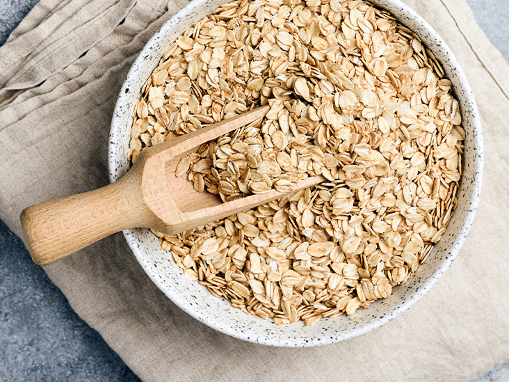

HomePage
Proteincereal (fiber rich)



You...
- ...hit the gym daily?
- ...want to save time making food?
- ...can't be bothered to have a meal every 1.5 hours?
- ...want to eat healthy AND hit all your macros?
- ...like to eat fresh and tasty food?
An oatmeal with many proteins and fibers could be the perfect solution. Combined with some fruit and nuts of your
choice, this meal really has it all. Easy to make, tasty, healthy, time efficient, rich of proteins and fibers and keeps you
saturated.
Bare in mind, that many fibers might work your stomach, so don't eat it before working out.
Ingredients
- ~150 g of Oats
- 1.5 Bananas
- ~200 g of frozen fruit
- 50 g Whey Protein
- ~100 ml milk (water works as well)
- 30 g of nuts of your choice (Cashews, Peanuts, sunflower seeds, almonds, etc.)
- (optional) honey
- (optional) more fruit (apple, kiwi, pineapple, pear, etc.)
If you have mixer, use it. This recipe written for the use of a mixer.
- Take your frozen fruit, put it under lukewarm water for rougly 30 seconds. Put your fruit into the mixer.
- Put the bananas inside aswell.
- Same goes for you protein powder.
- Now it's time for the little extras. Put in the nuts you like, and if you feel like it, you might aswell add honey.
- Pour the milk (/water) into the mixer.
- Since there are no limits, if you are creative, add something more if you like.
- Mixing time! Mix for 30 secs on the highest speed.
- Now its time to break some rules. But it's not that crazy. Pour your creation into a bowl.
- Pour your oats on top, just like on this photo.
- Normally it would now be time to say: Enjoy your meal! BUT...
- ...it is important that you DON'T stir your creation. For the best sensation, eat the meal like it is.
On every spoon from bottom to top, there should first be the juicy, fresh mix, and on top the oats. Try it out!
NOW enjoy your meal! :)